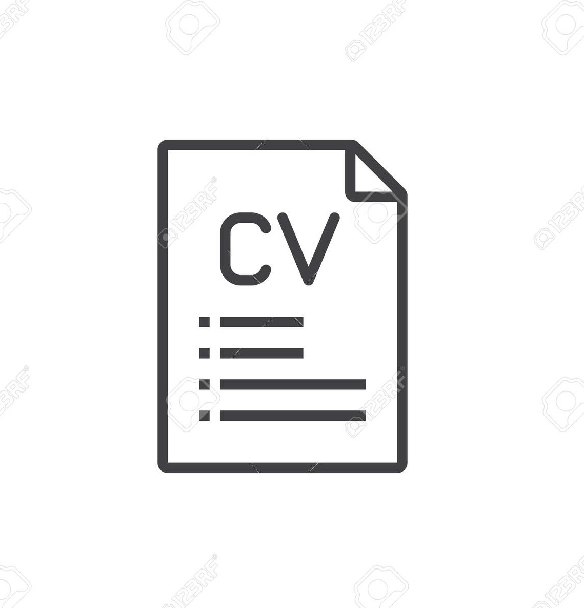
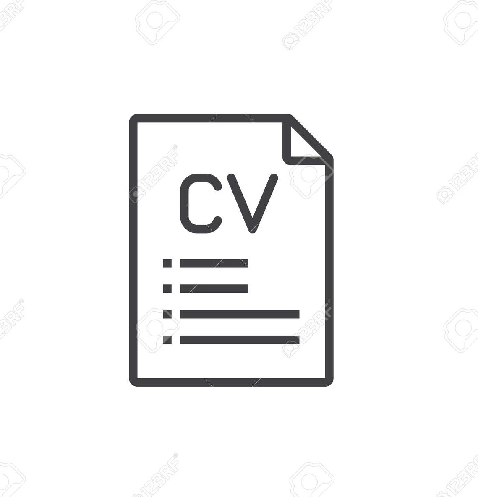
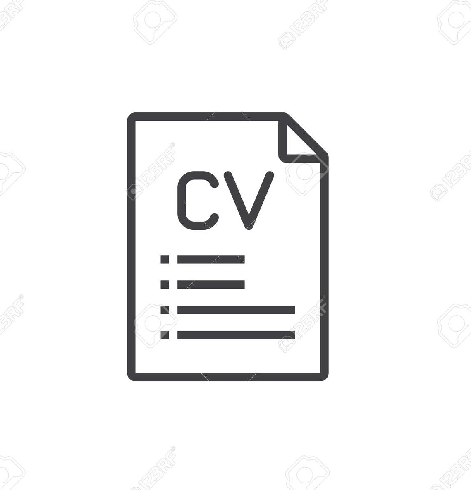

Ah. Zia Wasi

Born with personality is an accident but dying as a personality is an achievement.


 Background
Background
 My Article
Resume
My Article
Resume
Born with personality is an accident but dying as a personality is an achievement.
Background
My Article
Resume
I am a Software Engineer. I have worked for DCM AG as Full Stack developer Intern, DCM is brand and provides software as Services for its clients I used to develop bank related online database as final year project for Kardan Univeristy. Similarly I have a Bachelor in Computer Sciences with over 9 years of experience mostly in Banking and Administrative sectors.
Review Resume Visit my WorkI have bachelor's in computer science and a Diploma in business Administration with nine years of experience in various capacities, problem-solving, analytical thinking, and quick understanding of business logic are my strength, at the moment I am looking for a challenging position to make the best use of my skills and experience.

PHP was the main programming language while I was pursuing my Internship with DCM, Besides that in specialization period of my bootcamp course with Powercoders I worked in PHP.
While I was doing my Master with EPITA Paris I used to code in Python, it's one of my favorite programming languages, I also developed a sudoku game but not with Dynamic solutions.
JavaScript is also one of my favorite programming languages, I learned Javascript in Kardan University, however with Powercoders I expanded my Javascript knowledge

SQL stands for Structured Query Language. if its Oracle, SQL Server, or Maria DB, you definitely need SQL to retrieve, modify, or save data into tables, I learned SQL at Kardan University and I am consistently benefiting from the gained Knowledge.

HTML stands for HyperText Markup Language. Its the first ever Markup language that I used to code while I was at school, my favorite tag was <marquee> 💗.
CSS, Once you have a plain text and when you need to add styles and its CSS, I learned CSS wile doing my Bachelor and I updated my CSS knowledge when I was a part of Powercoders participant.